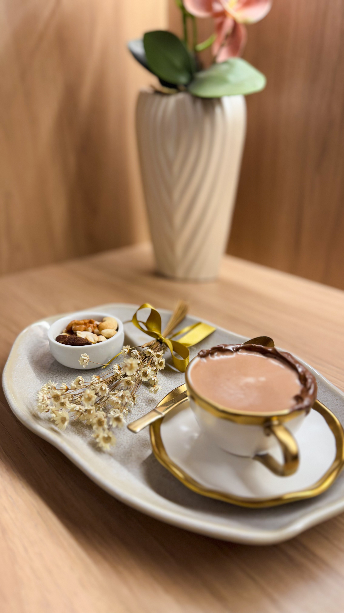
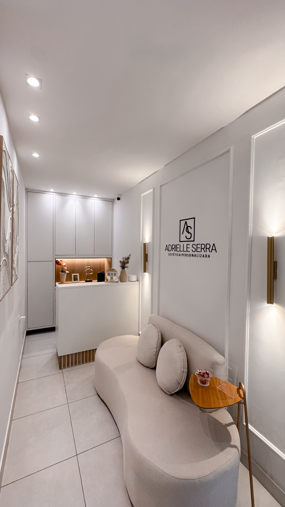
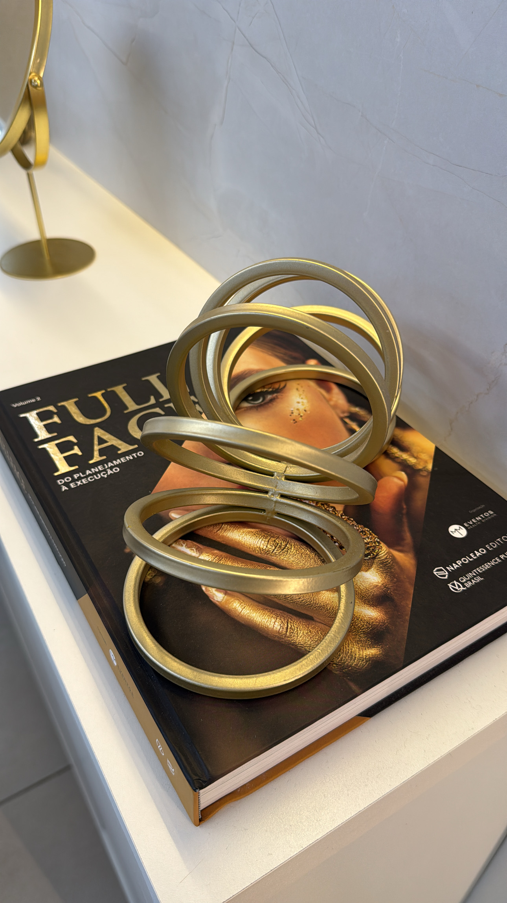
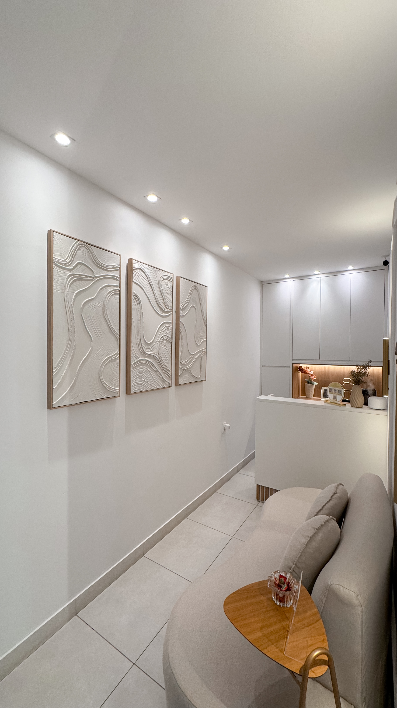

Protocolos personalizados de embelezamento facial para valorizar seus traços, melhorar a harmonia do rosto e realçar sua beleza com naturalidade.
Para mulheres que buscam naturalidade. Avaliamos suas proporções para criar um planejamento único, entregando resultados elegantes e sem exageros.
Análise do seu perfil e proporções faciais.
Protocolo definido de forma individual para você.
Procedimentos com foco em sutileza e harmonia.
Mais bonita, sem parecer que fez procedimentos.

Transformações planejadas para valorizar a beleza individual de cada paciente, respeitando seus traços e sua naturalidade.
Os resultados podem variar de acordo com cada paciente, avaliação individual e protocolo indicado.

Mais do que resultados visíveis, a experiência com a Dra. Adrielle é marcada por segurança, acolhimento e cuidado em cada detalhe.
"Profissional incrível! A Dra. Adrielle tem um olhar muito humano e detalhista. Ela realmente escuta o que a gente sente e busca o equilíbrio, sem exageros. O atendimento é acolhedor do início ao fim. A sensação é de estar em boas mãos o tempo todo. Resultado natural, elegante e com um cuidado que faz toda diferença. Super recomendo!"
"Eu fiquei muito satisfeita com o resultado, ficou ainda melhor do que eu esperava. Me senti muito acolhida com a experiência e com a Dra. Adrielle."
"Quero deixar registrado o quanto fiquei satisfeita e encantada com o atendimento e profissionalismo. Desde o primeiro contato, fui tratada com atenção, carinho e muito cuidado. Ela é extremamente dedicada, detalhista e transmite total confiança no que faz. O resultado do meu procedimento facial foi maravilhoso, e além da melhora estética, saí me sentindo renovada por dentro também. Sem dúvidas, uma profissional que ama o que faz e entrega excelência! Super indico! 👩🏼⚕️🌸"
"Ótimo atendimento, faz acompanhamento contínuo do processo e, principalmente, é um amor de pessoa e uma ótima profissional ❤️"
"Ameiii demais! Atendimento maravilhoso e serviço excelente. Voltarei com toda certeza"
"Minha experiência foi excelente! Fui super bem atendida pela Adriele, que foi atenciosa do início ao fim. Ela é extremamente receptiva, acolhedora e profissional. O espaço é muito limpo e organizado, com um cuidado visível com a higiene."
"Profissional excelente, didática, paciente e extremamente competente. Estúdio impecável, material de ótima qualidade, e todas as dúvidas esclarecidas. Minha experiência foi incrível e minha expectativa foi atingida, ainda mais por ter sido a primeira vez."
"Um ambiente completamente encantador. Quanto ao atendimento é impecável. Driele é um amor!"
"Toda equipe muito atenciosa e profissional! Parabéns!"
"Adriele é uma profissional muito atenciosa e humana. Ouviu minhas preocupações com atenção e executou um trabalho incrível. Estou muito satisfeita com o resultado!"
"Profissional incrível! A Dra. Adrielle tem um olhar muito humano e detalhista. Ela realmente escuta o que a gente sente e busca o equilíbrio, sem exageros. O atendimento é acolhedor do início ao fim. A sensação é de estar em boas mãos o tempo todo. Resultado natural, elegante e com um cuidado que faz toda diferença. Super recomendo!"
"Eu fiquei muito satisfeita com o resultado, ficou ainda melhor do que eu esperava. Me senti muito acolhida com a experiência e com a Dra. Adrielle."
"Quero deixar registrado o quanto fiquei satisfeita e encantada com o atendimento e profissionalismo. Desde o primeiro contato, fui tratada com atenção, carinho e muito cuidado. Ela é extremamente dedicada, detalhista e transmite total confiança no que faz. O resultado do meu procedimento facial foi maravilhoso, e além da melhora estética, saí me sentindo renovada por dentro também. Sem dúvidas, uma profissional que ama o que faz e entrega excelência! Super indico! 👩🏼⚕️🌸"
"Ótimo atendimento, faz acompanhamento contínuo do processo e, principalmente, é um amor de pessoa e uma ótima profissional ❤️"
"Ameiii demais! Atendimento maravilhoso e serviço excelente. Voltarei com toda certeza"
"Minha experiência foi excelente! Fui super bem atendida pela Adriele, que foi atenciosa do início ao fim. Ela é extremamente receptiva, acolhedora e profissional. O espaço é muito limpo e organizado, com um cuidado visível com a higiene."
"Profissional excelente, didática, paciente e extremamente competente. Estúdio impecável, material de ótima qualidade, e todas as dúvidas esclarecidas. Minha experiência foi incrível e minha expectativa foi atingida, ainda mais por ter sido a primeira vez."
"Um ambiente completamente encantador. Quanto ao atendimento é impecável. Driele é um amor!"
"Toda equipe muito atenciosa e profissional! Parabéns!"
"Adriele é uma profissional muito atenciosa e humana. Ouviu minhas preocupações com atenção e executou um trabalho incrível. Estou muito satisfeita com o resultado!"
Sim. A proposta da Dra. Adrielle é realçar a beleza da paciente sem descaracterizar seus traços.
A indicação é feita após avaliação individual, considerando seu rosto, sua queixa e seu objetivo.
Sim. O foco da metodologia é justamente entregar um resultado elegante, sutil e natural.
O desconforto varia conforme o protocolo, mas a paciente recebe orientação e cuidado durante todo o atendimento.
Depende do procedimento indicado. Alguns resultados são mais imediatos, enquanto outros evoluem progressivamente.
A durabilidade varia conforme o protocolo, organismo e hábitos da paciente.
Sim. A equipe pode te orientar pelo WhatsApp antes do agendamento.
Um ambiente premium pensado para oferecer conforto, privacidade e total acolhimento em cada etapa do seu atendimento.




A Dra. Adrielle Serra atende em um espaço pensado para oferecer conforto, privacidade e uma experiência premium desde a chegada.
Av. Luiz Viana, 178 - 3º Andar - Centro
Santo Antônio de Jesus - BA

.PNG)
.jpeg)